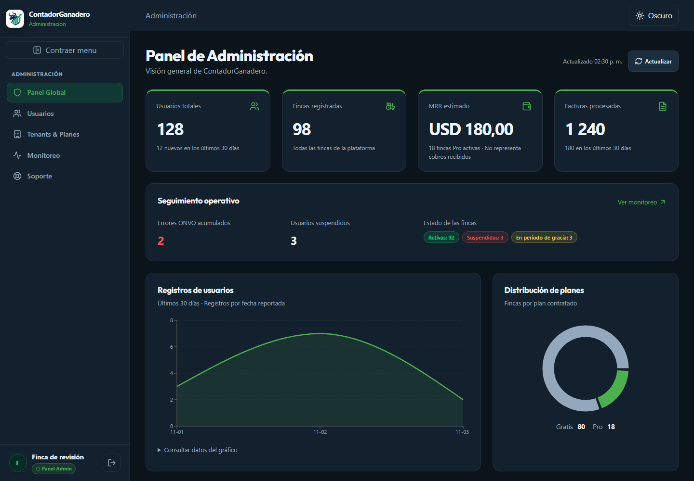
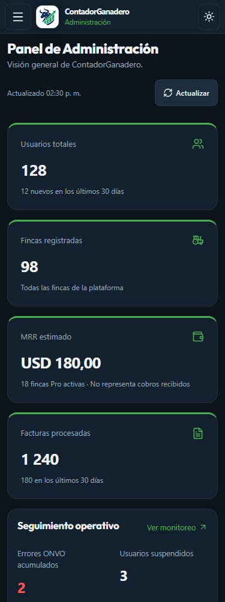
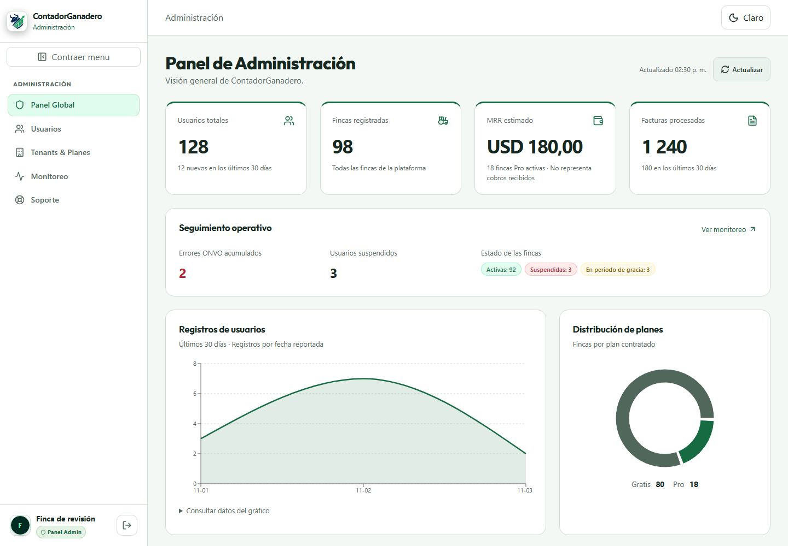
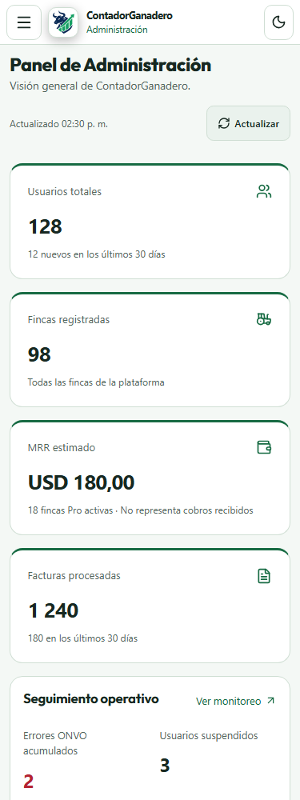
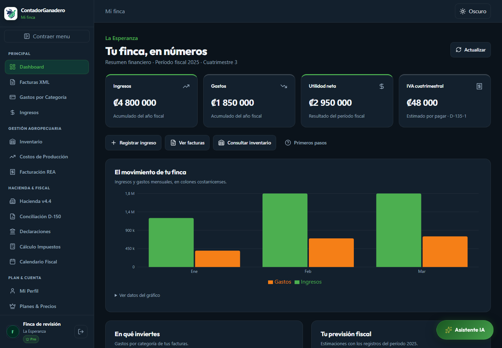
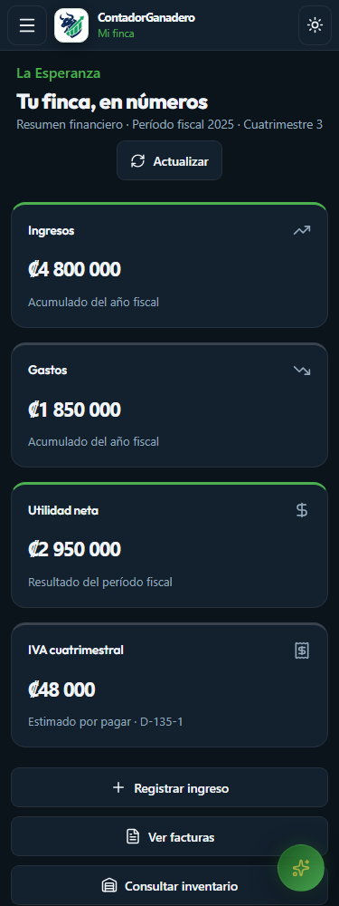
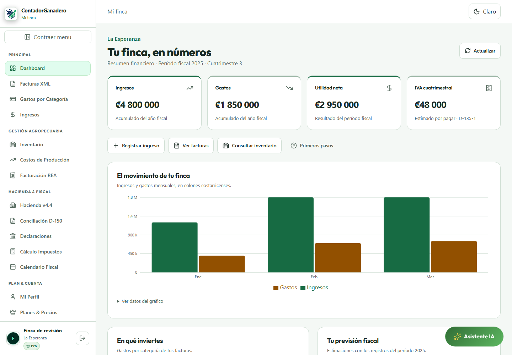
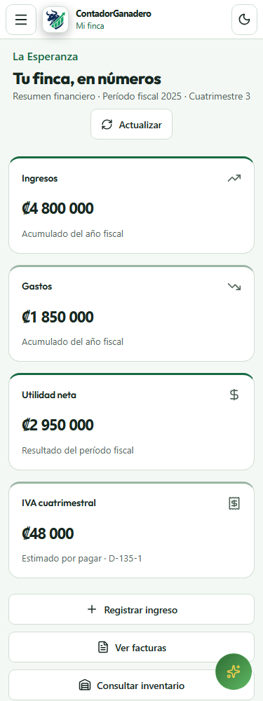

Pull request #37 ? Borrador para revisi?n
Revisi?n de los dashboards privados. Capturas con datos de prueba aislados; la aplicaci?n utiliza sus APIs existentes. No se despleg? a producci?n.
Informe de implementaci?n ? Resultados del navegador








QA final aprobado sobre build de producci?n local: foco m?vil, movimiento reducido, preferencia del sistema, errores iniciales y estados vac?os.
# Dashboards privados: implementaci?n y revisi?n Rama: `feat/private-dashboards`. No se despleg? a producci?n. ## Implementaci?n - Productor: ingresos, gastos, utilidad e IVA, gr?fico mensual y tabla accesible, categor?as, previsi?n fiscal, acciones reales y gu?a descartable/reabrible. El a?o de los gr?ficos ahora coincide con `periodoFiscal` del resumen. - Administraci?n: cuatro m?tricas prioritarias, estados de fincas, errores ONVO, registros diarios, planes, accesos y m?tricas avanzadas. MRR identificado como estimaci?n, no cobros. - Tema ?nico persistido en `cg-theme`, preferencia del sistema, script local antes de React compatible con CSP. Variables sem?nticas CSS y shadcn, sin reinstalar librer?as visuales. - Logo oficial `/logo.svg`, tambi?n utilizado por el sitio p?blico, en navegaci?n expandida/compacta y m?vil. - Skeletons compartidos, estados inicial/error/vac?o/actualizaci?n diferenciados, transiciones discretas y reducci?n de movimiento. - Sidebar con colapso, enlaces por rol, Escape, foco contenido en men? m?vil y enlace para saltar al contenido. ## Verificaci?n - `npm run lint --workspace frontend`: aprobado. - `npm run test --workspace frontend`: 68/68 aprobadas. - `npm run build --workspace frontend`: aprobado, incluidos 13 documentos p?blicos prerenderizados. - QA Chromium: fixtures de red locales, 320/375/768/1024/1440 px en ambos temas y roles. Resultados detallados en `qa-results.json`. - Capturas posteriores incluidas. No se captur? una l?nea base visual anterior. - Peers necesarios a?adidos: `react-is` para Recharts y `@testing-library/dom` para tests existentes. No se a?adi? biblioteca de animaciones ni dashboards. ## L?mites y pendientes - No se verificaron credenciales ni datos reales de producci?n; autenticaci?n/API backend y aislamiento tenant no se modificaron. Las pruebas de roles cubren el frontend. - El backend ya contiene un fallback demo documentado para indisponibilidad MongoDB; no se alter? en este redise?o. No se a?adieron datos ficticios al c?digo de producci?n. - No se afirma auditor?a WCAG completa ni se ejecut? axe. Revisar vistas privadas secundarias con contenido real antes de desplegar. - El reel no pudo recuperarse; se dise?? una direcci?n propia sin atribuirle patrones visuales. ## Skills y equipo Skills: memorix-orchestrate, memorix-sessions, memorix-reasoning, vercel-react-best-practices, vercel-composition-patterns, vite, frontend-design, tailwind-design-system, web-design-guidelines, workers-best-practices; Admin/QA consult? javascript-testing-patterns y web-perf. Dos especialidades simult?neas: productor/UI y administraci?n/QA. Tras una interrupci?n por l?mite de servicio se retomaron ambas, sin superar dos subagentes simult?neos. Coordinador propietario del shell, temas, integraci?n y validaci?n final. ## Archivos modificados - `frontend/index.html` - `frontend/package.json` - `frontend/src/App.jsx` - `frontend/src/components/dashboard/GastosCategoriaList.jsx` - `frontend/src/components/dashboard/ProyeccionFiscal.jsx` - `frontend/src/components/dashboard/ResumenCards.jsx` - `frontend/src/components/dashboard/TendenciaChart.jsx` - `frontend/src/components/layout/Sidebar.css` - `frontend/src/components/layout/Sidebar.jsx` - `frontend/src/components/ui/skeleton.jsx` - `frontend/src/index.css` - `frontend/src/pages/DashboardPage.css` - `frontend/src/pages/DashboardPage.jsx` - `frontend/src/pages/admin/AdminDashboardPage.jsx` - `frontend/src/pages/admin/admin.css` - Nuevos: `frontend/public/theme-init.js`, `frontend/src/context/ThemeProvider.jsx`, `frontend/src/context/theme.js`, `frontend/src/components/layout/ThemeToggle.jsx`, `PrivateBrand.jsx`, `frontend/src/components/dashboard/DashboardSkeletons.jsx/css`, `frontend/tests/dashboard-browser-qa.mjs`.